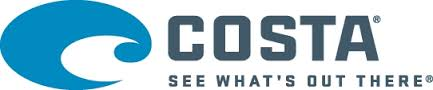
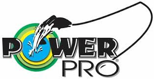
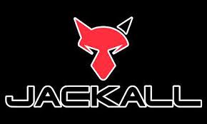
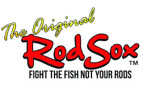
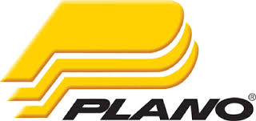
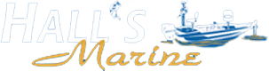
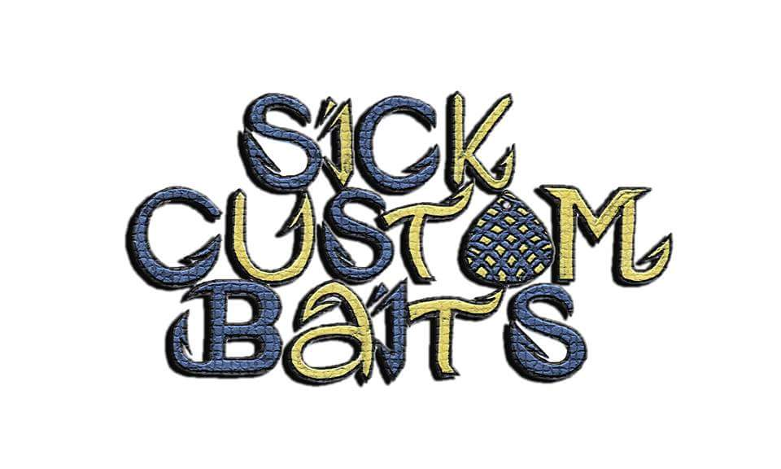
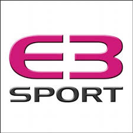

Sponsors
Shimano
For over 80 years, Shimano has concentrated on precision engineering, one step at a time. Creating the most innovative products and processes you can hold in your hand today.
Costa Del Mar
Costa Del Mar builds the clearest sunglasses on the planet for those who live to be on the water. They are excellent polarized glasses for the ultimate advantage of the water.
G. Loomis
After more than 25 years in business G. Loomis Rods has learned a few things about making great fishing rods. Proudly, every rod is designed, rolled, assembled and hand finished in Woodland , Washington by some of the best craftsman in the world.
PowerPro
Simply put, PowerPro is the ultimate combination of modern technology and old-fashioned fishing knowledge. We begin with ultra-strong braided Spectra Fiber, then use Enhanced Body Technology to create an incredibly round, smooth, and sensitive line.
Jackall Baits
Quality soft baits, hard baits, jigs and more!
Tackle Warehouse
Guaranteed lowest prices on bass fishing tackle from every top brand.
Lake Fork Trophy Lures
Lures with an Attitiude!
Rod Sox
RodSox was created by pros that love fishing and want to spend as much time fishing when they're on the water as possible. RodSox has a proprietary unique feature, a snag proof, hook resistant flared end making loading and unloading your rods quick and easy.Tired of untangling your fishing rods, and the tangled mess inside your rod locker? We have the solution for you - the Original RodSox that covers your rod and keeps everything in place so your fishing pole is ready to use when you need it.
Plano
Plano Tackle Systems are designed with all fishermen in mind. Complete lines of bags, boxes and accessories provide everything you need to ensure you are equipped and prepared for your next fishing outing. Whether you're competing in a tourney or heading out for your first time, Plano has the gear to help you find success.
Hall's Marine
Hall's Marine opened for business November 22, 2010. Our brand new facility is located on 60 Logan Drive in Muncy, Pennsylvania. With over 6 acres and a new 8000 square foot building, you really need to see how we can handle all your boating needs. Hall's Marine is proud to offer boats from Crestliner, , Bass Cat, , and princecraft pontoon; all powered by Mercury and Mercruiser. We are a full service dealer, servicing all major brands including Mercury, Yamaha, Evinrude, Johnson, OMC, and Mercruiser, . With over 100 years of combined experience, you can trust our service department for all your repairs and maintenance needs. With our factory trained technicians and Mercury Master Tech on staff, there is no doubt your boat, motor, and trailer will be ready to go, when you are ready to get on the water. When it comes to fishing, we have added products from Cabin Creek, Sneaky Hollow Baits, War Eagle, Gary Yamamoto, , and other products from Bass Pro. We also have fishing line from Yo-Zuri and Seaguar. Come check us out! You won't be disappointed by our selection or our prices
Sick Custom Baits
Just 2 guys with a passion for bass fishing that started to make their own handcrafted spinnerbaits. Spinnerbaits Catch Bass!
E3 Sport Apparel
The best in professional dye sublimation custom sports & fashion apparel. No minimums, free normal setup, and fast response turnaround.
Gamma Line

Black Knight Industries, Inc. was founded by Dale and Heidi Black in September 2010 and purchased the fishing division of Gamma Technologies in November 2010.
Black Knight Industries is a small family owned business located in Oil City, Pennsylvania. Oil City is in the Northwest portion of the state about an hour and 45 minutes north of Pittsburgh and an hour and 20 minutes south of Erie.
Nestled around the Allegheny River, the area has many opportunities for outdoorsman. We have many trout fishing streams, some stocked and some that are full of native brookies. We have lakes loaded with bluegill, perch, walleye, bass and musky. We even have lakes that have landlocked stripers. Then there is my favorite, the Allegheny River, where I fish for smallmouth, walleye, musky, catfish and carp.
I look forward to matching my experience as a fisherman to the production/marketing of Gamma and Frog Hair lines. When a new company takes over there are normally changes that occur. I want to reassure you that there will be no changes in the product quality. It is very important to us to maintain the high standards that Gamma Technologies established in their products.
Gamma Technologies will still be involved, as a sub-contractor, treating the line with their proprietary process. This process is what gives Frog Hair and Gamma the qualities we all have become used to. That is why I, myself use it and why I pursued the purchase of Gamma's fishing division.
JaKKed Baits
At JaKKed Baits we are a company dedicated to providing quality custom jigs at an ultra-competitive price. We are tournament fishermen who know what it takes to compete at a high level and what it takes to win. We have a full range of jig colors to meet any condition you could face. Jakked Baits also specializes in fully customizable orders with a nearly unlimited selection of skirt colors and jig types to keep you ahead of the curve. Get JaKKed Baits, "don't just hook'em...JaKK'em!"
Bass Pro Shops

Bass Pro Shops is a privately held retailer of hunting, fishing, camping and related outdoor recreation merchandise, known for stocking a wide selection of gear. Bass Pro Shops supports and sells merchandise for the National Audubon Society.
Mystery Tackle Box

Mystery Tackle Box is a fun and affordable way to discover new fishing products every single month! Their subscription plans introduce beginner and expert anglers alike to new fishing lures and tackle, and the best way to use them.
Anglr

ANGLR has automated the 1000 year old process of maintaining a fishing logbook with simple technology. Now fishermen can effortlessly capture key fishing events and apply successful patterns to catch more fish the next time out.
Simms

Simms Fishing Products is a high end fishing equipment, accessories and apparel manufacturer in Bozeman, Montana.